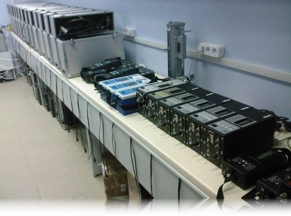

Услуги
Компания "АНАЛИТЕХ" проводит все виды работ в области технического обслуживания и ремонта анализаторов обеспечивая гарантированное прохождение периодической поверки приборов производства:
Honeywell Analytics, BW-Technologies, IMR, Testo, MRU, Ecom, MSA, Drager, Kane, Chemist, Oldham, Baxarach, Servomex, Аналитприбор, Дитангаз и др.
Мы обеспечиваем пользователей оригинальными расходными материалами и запасными частями по оптимальным ценам.
В целях отслеживания грузов и определения объема работ при отправке приборов через транспортные компании, убедительно просим заполнить заявку.
бланк заявки
